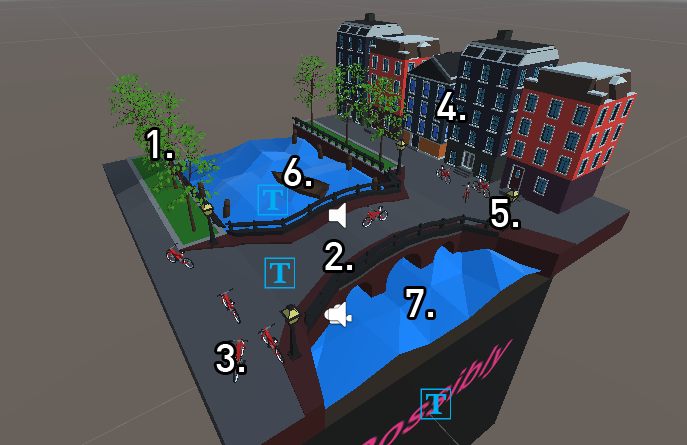
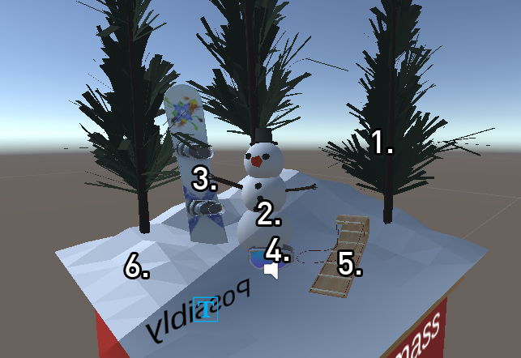

How to Build and run app
In order to build the app, you must first go on the Github page of the project and download the zip file for it. Once downloaded, you need to extract it to your desired location. Once you have done that, make sure you have Unity 2019.4.28f1 installed with Unity hub + Android Build Support Module. With that installed, you can simply open Unity hub, and under projects, you need to click on the add button and look for the folder where your project is stored and open inside that folder and then add it. Once you have done that, open the project. With the project opened, go under the scenes folder and open the scene titled "Project1Scene". With that open, now you have to make sure several of your configurations are set up. First with the vuforia configuration file that is stored under the resource folder, have that opened in the inspector. Add your vuforia License Key within the inspector as well as make sure Max Simultaneous Tracked Objects + images are set to the value 3. With that configured, now you need to decide which platform you will build for. If you are building for Windows, go under File->Build Settings. Under Build, settings make sure you have "Scenes/Project1Scene" check-boxed, and you can simply either build it or build and run. You will then be asked which folder to build the app in, and an executable will be made for you to run.
If you are building for Android, things will need to be done a bit differently. Under Build Settings, you will need to select Android and press the Switch Platform button. With that, go under player settings in the Build Settings, and double-check the Minimum API level is set to 24 aka Nougat. You will also need to make sure you have the right version of Gradle installed, which you can by under Edit -> Preferences -> External Tools, from there scroll down and check the version of Gradle you have installed. Make sure it's any version from 5.6.4 and above. If not, install the correct version from Gradle's website, and change the file location to be of your updated Gradle folder with the bin folder. Now simply you need to connect your android device to your computer, and under Build settings, build and run and an apk file will be made on your computer as well as on your phone. From there, your phone will run the app and store it as a normal app on the phone.
List of Software + version numbers
Model/Audio Sources
*Hover over for link*
Amsterdam Knick Knack
- Basic Tree model by me
- Bridge/sidewalks by me
- Red Bike model by me
- 3 Different variation of Apartment buildings by me
- Street Lamp model by me
- Boat [Low Poly Realist] by Islide
- Polygonal Water by me
Colorado Knick Knack
- Pine Tree model by me
- Snowman model by me
- Snowboard V1 SG by printable_models
- Toboggan Sled by P3TroV
- Goggles V1 by printable_models
- Polygonal Snow by me
Discussion on AR objects
I definitely believe that augmented reality will become the next standard in our lives in the near future. After working on this project, it gave me a good idea of the difficulty it requires to implement augmented reality within anything. I think the main reason to why AR can become popular in the future is that it adds another layer of experience to one's day-to-day basis. That layer enables users to enhance their environments or situations that they are in, allowing the experience to become better or worse depending on the case. However, I see it as means of enriching one's experiences rather than worsening them. There are several examples that I can think of on the top of my head. Starting first with education, AR objects can help students learn different topics for the better. It can especially benefit those that do best in learning with visuals and interactivity. An example in the educational field with AR objects is that it can replace the usage of the whiteboard or enhance it by allowing AR objects to appear alongside the given material. Another example in the educational field is bringing AR objects within books. Stories can be enhanced with different variety of visuals that utilize AR. Looking at other places that can benefit AR objects, an example would be purchasing items. With special eyewear that is developed to show AR objects, one could possibly see an AR object of a price tag over items and be given the option of purchase the item. So if let's say I went to a grocery store whilst wearing my ar glasses, I can simply pick up an item like an orange and see AR objects that showcase attributes about it, such as price tag, nutrition, etc as well as the option of purchase it on the spot. This enhances the buying experience of items, bringing ease into knowing what we are buying, and making purchasing goods in one simple step. One other place that AR objects can benefit in their inclusion is in recreational places such as museums, amusement parks, music festivals, lives sports, etc. It can help it by adding AR objects that show direction and places of interest in the physical space such as arrows or giant marks in the sky that lead you. It can help the physical space by adding more decor to the environment enhancing the visual aspect of one's view, such as at a music festival where if one is wearing AR eyewear they can see additional visuals that complement the artist's performance. It can also help bring more information to the viewer, such as a live sports game, it can bring up an AR object that showcases a live updating scoreboard for the viewer to keep track of what's going on. However, there is one possible drawback with bringing AR objects to everyone's view and that would be advertisements. Taking a look at the internet and television as examples, we can see how ads have evolved to be something integral in those experiences. Bringing ads into the augmented reality space can be quite bothersome to most users. Ads can take up a lot of space depending on how companies will approach them. It reminds me of a video by a designer named Keiichi Matsuda. The video was titled Hyper-Reality, and the video demonstrates the possible vision of how Ads look in an AR space. It shows how distracting, overwhelming, and annoying it can be with hundreds of ads competing with each other to get control of your view/attention. Such a possibility is one reason why AR can possibly not become popular in the future.